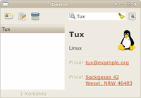
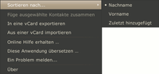

Dexter
Archivierte Anleitung
Dieser Artikel wurde archiviert, da er - oder Teile daraus - nur noch unter einer älteren Ubuntu-Version nutzbar ist. Diese Anleitung wird vom Wiki-Team weder auf Richtigkeit überprüft noch anderweitig gepflegt. Zusätzlich wurde der Artikel für weitere Änderungen gesperrt.
Anmerkung: Die Weiterentwicklung von Dexter wurde eingestellt. Nachfolger ist das Projekt Dexter Contacts  .
.
Zum Verständnis dieses Artikels sind folgende Seiten hilfreich:
Dexter ist das Adressbuch aus dem Elementary Project . Es dient zur Verwaltung von Kontakten und hält sich dabei an den vCard-Standard.
Das in Python programmierte Dexter sollte ursprünglich besonders gut mit dem E-Mail-Programm Postler zusammenarbeiten und dessen Kontakte verwalten. Da auch Postler inzwischen Schnee von gestern ist, wurde die Weiterentwicklung gestoppt.
Installation¶

Dexter ist nicht in den offiziellen Paketquellen enthalten. Unter Ubuntu 10.04 kann ein einzelnes Fremdpaket  manuell heruntergeladen und installiert [1] werden.
manuell heruntergeladen und installiert [1] werden.
Bedienung¶
Dexter kann über den Befehl dexter oder aus dem Menü heraus gestartet werden:
"Büro -> Dexter" (GNOME und Xfce)
Beim ersten Programm-Start versucht Dexter, Kontakte zu importieren. Diese müssen als vCard vorliegen.
Werkzeugleiste¶
Dexter ist einfach zu bedienen. Die grundlegenden Funktionen sind über die Schaltflächen der Werkzeugleiste erreichbar.
| Funktionen in der Werkzeugleiste | |
| Icon | Beschreibung |
| "Einen neuen Kontakt anlegen" | |
 | "Den ausgewählten Kontakt bearbeiten" |
 | "Ausgewählten Kontakt löschen" |
| Suche, bei der schon während der Eingabe die Ergebnisse angezeigt werden | |
 | Suchfeld leeren |
| Kontextmenü aufrufen | |
Kontextmenü¶
 Das Kontextmenü bietet weitere Werkzeuge:
Sortieren der Kontaktliste
Im- und Export von vCard-Kontakten
- Erstellt mit Inyoka
-
 2004 – 2017 ubuntuusers.de • Einige Rechte vorbehalten
2004 – 2017 ubuntuusers.de • Einige Rechte vorbehalten
Lizenz • Kontakt • Datenschutz • Impressum • Serverstatus -
Serverhousing gespendet von